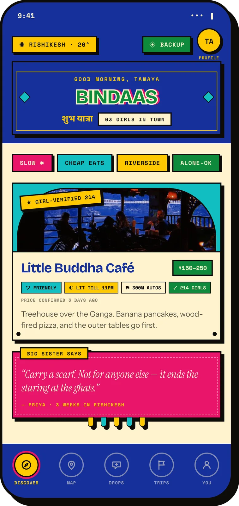
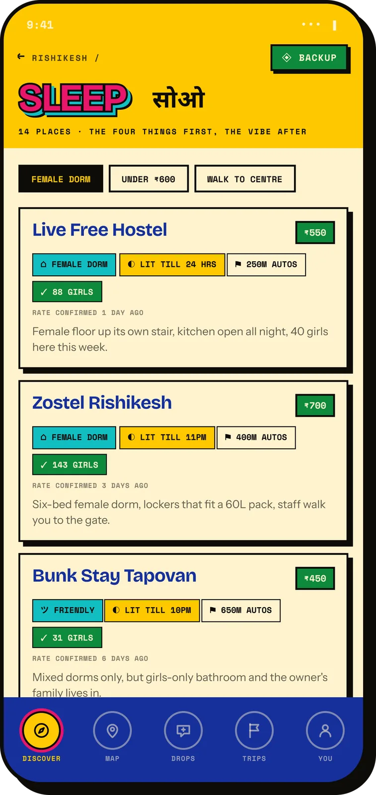
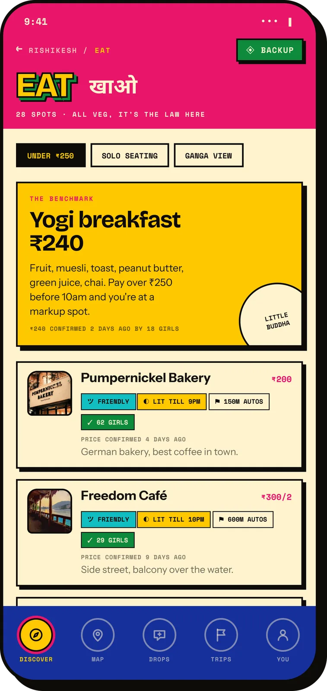
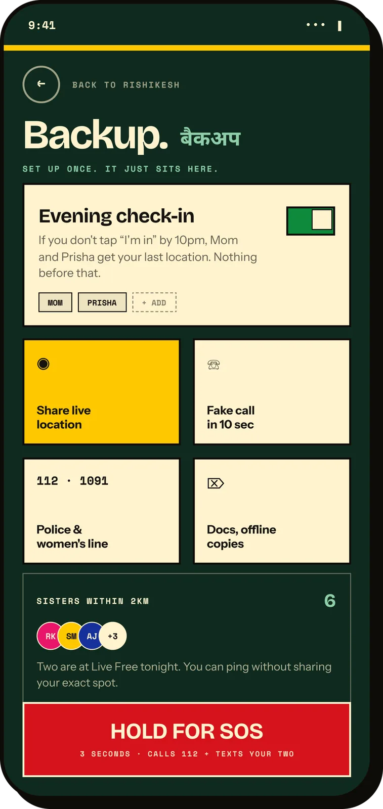
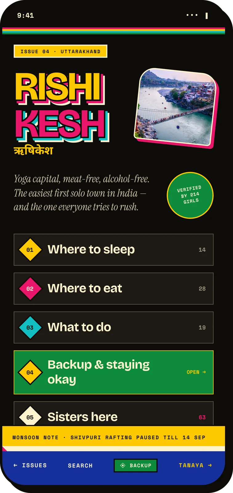
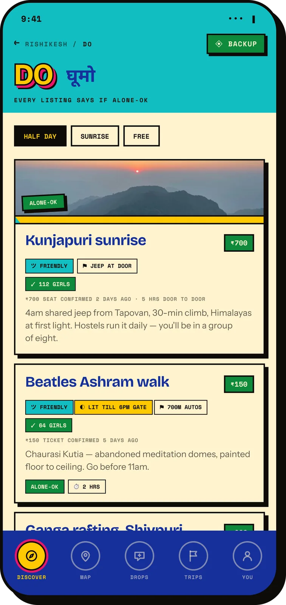
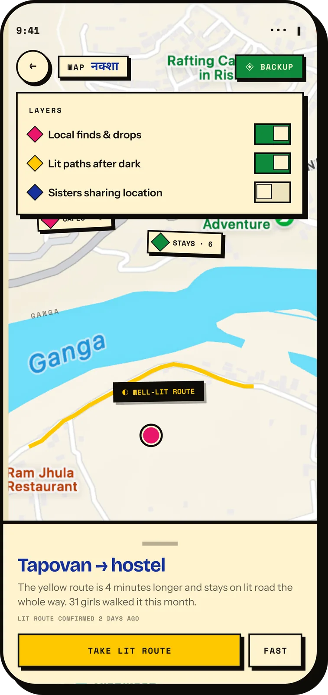
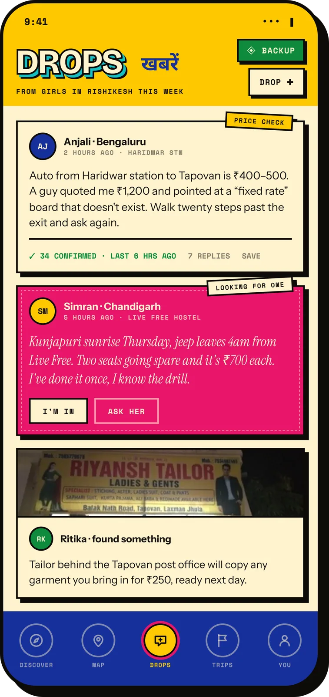
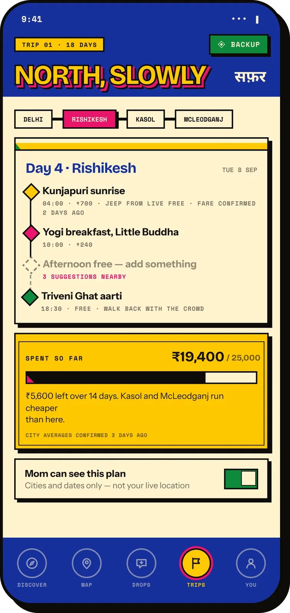
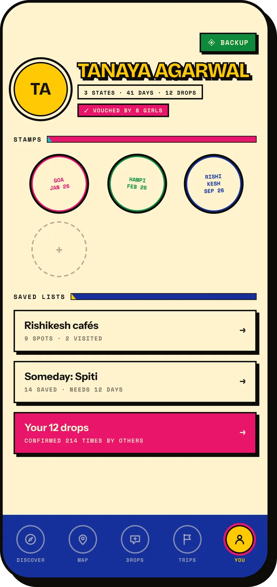

App Design
A travel guide for girls backpacking solo across India, where every listing is verified by a girl who went there herself.

What a girl travelling alone in India actually wants to know is not on any listing page. Is the dorm floor women-only, how late does that street stay lit, how far is the nearest auto, and has anyone like me slept here. That information exists, but it is scattered across group chats and comment threads, and it expires. Bindaas is built on one rule: nothing appears on a listing unless a girl who went there put it there.
Every listing in the app — a hostel, a café, a 4am jeep — carries the same strip: dorm type, how late the street stays lit, distance to autos, and how many girls have confirmed it. Same four, same order, so you learn to read it in a glance and can compare two places without re-reading either. When a field has no answer it says not confirmed yet rather than filling in a plausible guess, and every price carries the date it was last confirmed, because a stale fare is what gets you overcharged at the station.


The strip leads the row on sleep, where it matters most; on eat it sits under a benchmark price, so an overcharge is obvious before you order.
Backup sits in the same corner of every screen: two chosen contacts, a one-tap check-in before 10pm, a fake incoming call, offline copies of documents, and a hold-to-send SOS. Setting it up once is the whole interaction — after that it just sits there. It is also the one screen where the truck-art language drops out entirely. No extruded titles, no Hindi second line, no painted plaques. If you are opening this screen you are not in the mood for a personality, so it stays flat, dark and calm.

The home screen went through two readings. The first is a feed. The second treats each city as an issue of a zine — numbered sections, a contents page, a monsoon note across the bottom — which gave the guide a reason to have an editorial voice instead of a ranking algorithm. Both keep the four fields intact; only the framing around them changes.


The map offers a route that is four minutes longer and stays on lit road the whole way, and says how many girls walked it this month. Drops is the week's traffic from girls in town — fare corrections, a tailor behind the post office, two spare seats in a jeep — the stuff that is true for a week and then is not. The trip planner shares cities and dates with home, and only cities and dates: a plan your mother can follow without a live dot on a map.



The profile counts states crossed as painted roundels rather than points or levels — travel is the reward, and a leaderboard would push girls to move faster than they should. The visual language throughout borrows from Indian truck art: painted tin plaques, hand-lettered extruded titles, Hindi set beside English. What I would change: the strip is dense at four fields, and on the smallest phones the fourth wraps to its own line — it wants a compressed variant before this gets built.

Credits — Concept, UX and UI: Tanaya Agarwal. Wireframes in Figma.